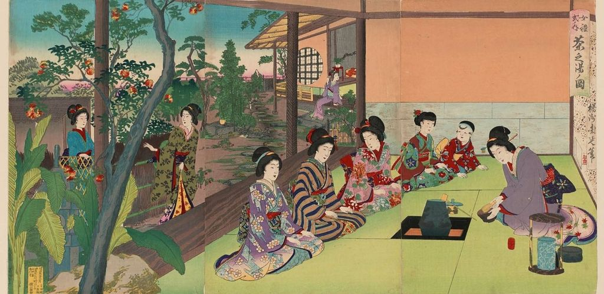

Développé vers la fin du XVe siècle sous l'influence du bouddhisme zen, ce cérémonial philosophique invite l'homme à se purifier en s'unissant à la nature. C'est pourquoi, l'allée qui mène au pavillon passe au milieu des arbres et des fleurs et permet au visiteur d'accéder au premier stade de la méditation. Rien n'est d'ailleurs laissé au hasard : décor, mets, sujets de conversation, etc. Un grand respect est porté aux geishas qui maîtrisent parfaitement le moindre détail de la cérémonie. Au départ, une collation légère est servie et est suivie d'une courte pause. Vient ensuite le Goza Iri, moment central de la cérémonie, au cours duquel est d'abord servi un thé épais, Koïcha, puis un thé léger, Usucha. Diverses purifications et civilités d'usage ont lieu jusqu'à ce que l'hôte frappe cinq coups sur un gong. Après une suite de gestes minutieux,
il verse pour chaque invité trois cuillérées de Matcha dans un bol, puise une louche d'eau chaude et bat la mixture avec un fouet en bambou jusqu'à obtenir un liquide épais. Le bol est posé près du foyer et l'invité d'honneur s'approche à genoux. Il boit alors trois gorgées et, après la première, formule des compliments sur le goût du thé. Ensuite, il essuie l'endroit touché par ses lèvres avec le papier Kaïshi, qu'il a amené avec lui, et passe le bol au second invité, qui procède de même et ainsi de suite. Le dernier rend le bol au premier, qui le tend à l'hôte.